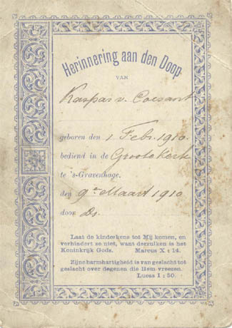
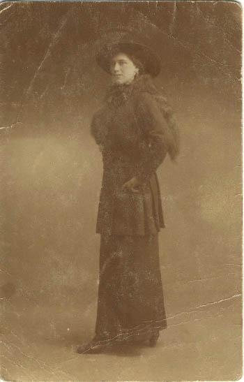

Dit zijn mijn ouders toen ze trouwde

En dit zijn mijn oma en opa

De doop herinnering van mijn vader!!!
Dit vind ik zelf wel heel bijzonder, ik ben in contact gekomen met mijn neef Ruud de Fouw.
En zijn vader, mijn ome Rinus, die had dit zuinig bewaard.

Dit is Daniël Donselaar

Grafsteen Daniël Donselaar die getrouwd was met Mietje Petronella Monsees van Coesant.
%2cCarla%2comeCasCoesant%2ctanteWies.jpg)
Deze foto's heb ik toegestuurd gekregen van Ria Jansen: dank je wel erg leuk!!!
van links naar rechts.Mientje, Ria, Maarten, Hans, tanteBep (zusvanMaarten), Carla, ome Cas Coesant, tante Wies

Kinderen familie Jansen,neven en nicht van de familie van Coesant

Hendrika van Coesant - geb. 25-07-1893